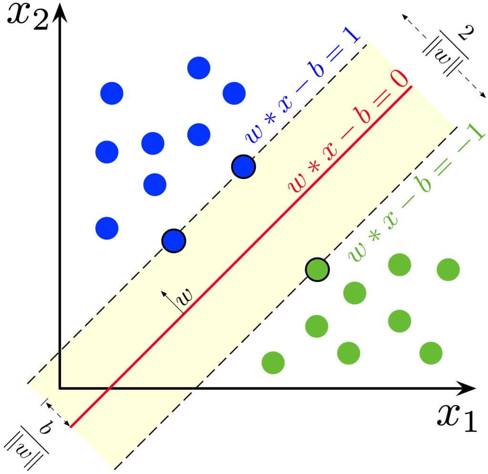

Objectives For Today
- Supervised Learning
Machine Learning (ML) in a nutshell
"What has been will be again,
"what has been done will be done again
"there is nothing new under the sun." Ecclesiastes 1:9 (NIV Bible)
In a nutshell, we take repeatable happenings in a situation and predict with a good confidence that it will happen again, in order to inspire action items that drive value.
- We drive the same streets again and again in our daily commute, where the roads don't change frequently.
- Weather patterns repeat itself year-on-year, where we know what to do so that we make the best out of it.
These patterns present themselves as data to us, and the data can come in many shapes and forms, such as:
- Digits and numbers
- Time
- Images
- Voice recordings
Types of ML
- Supervised Learning
- We already have enough information to know the possible outcomes of a situation, and we are simply trying to improve our accuracy so that our decisions may be as impactful as possible:
- Sports Analytics: Sports are man-made, and the outcomes are already defined witin the game.
- Credit Scoring: How often you loan and repay your debts through your credit cards is relatively predictable.
- Most businesses are in this category.
- Types of Supervised Learning:
- Classification: Grouping data into buckets with similar properties
- Regression: Fitting data to determine if an event would happen again.
- Unsupervised Learning
- We don't have enough information to know what are the possible outcomes, but we are collecting and observing the data to know its possible trajectory so that we can make decisions on the data.
- Self-driving cars: We don't know if a car, person, or animal might happen within your path.
- Recommendation systems: Each person is unique, and the outcomes vary per person.
Introduction to Support Vector Machine (SVM)
Let's open up the file(s) in the 01-Ins_SVM folder to get started.
Why SVMs?
Supposed we want to categorize data points into 2 labels. Let's say we want to classify between cats and dogs, and we are classifying them based on height and weight.
In linear classification, we use a line to distinguish 2 entities. As a general rule of thumb, dogs are bigger and heavier than cats.
However, what about outliers? How do deal with mini poodles that can be extremely small? They would be labeled as cats if we use a hard line to model.
Thus, the use of SVMs is to address outliers so that we minimize the impact of outliers that could misalign our model.
In the example above, the yellow area presents a soft margin where we allow misclassifications to happen. We can allow misclassifications because we expect the misclassifications to be an exception rather than the norm.
- The line in between the dashed lines is called the maximum margin classifier. In linear classification, we use this line to make a distinction between our 2 labels.
- A soft margin classifier is also known as a support vector classifier.
- Support vector classifier is derived where the observations on the edge and within the soft margin are called support vectors.
- The data points on the dashed lines are called support vectors, because these data points serve as the boundaries of where we define the soft margin.
- If we have 2 dimensions, the support vector would be a line, as seen in your activities. If it is 3D, it will be a plane rather than a line. When you are predicting 4 or more dimensions, the support vector classifier is a hyperplane.
- But for simplicity sake, we call the support vector classifier as a hyperplane irregardless of the number of dimensions.
Additional Instructions
Students Do: Predict Occupancy of Office Space
Let's open up the file(s) in the 02-Stu_Predicting_Occupancy folder to get started.
You will not be able to plot the graph since the dataset has more than 3 dimensions.
Introduction to Decision Trees
Let's open up the file(s) in the 03-Ins_Decision_Trees folder to get started.
In layman terms, decision trees is a massive if-else algorithm that compares across all your input features to classify the data.
For example, we have a table such as this:
| Weight (kg) | Height (cm) | Classification |
|---|---|---|
| 4.4 | 46 | cat |
| 20 | 68 | dog |
So a decision tree could look like:
- If the animal is < 4.4kg and < 46 cm, it is a cat.
- If the animal is > 20kg and > 68 cm, it is a dog.
The model will build a tree and its nodes with full of if-else statements by themselves, and based on the trained data set, attempt to capture pattern and predict accordingly with the features of an unknown animal.
Decision trees need to be pruned, which is to weigh the features and reduce the number of features needed.
- Because decision trees are very susceptible to overfitting, where your tests might yield good results, but your real-world experience with the model yields poor results.
Additional References
Students Do: Predicting Fraudulent Loan Applications
Let's open up the file(s) in the 04-Stu_Predicting_Fraud folder to get started.
Break - 15 mins @ 8:05pm
Random Forest
Let's open up the file(s) in the 05-Ins_Random_Forest folder to get started.
Intro to Ensemble Learning
In layman terms, you are combining multiple models and/or algorithms to improve accuracy.
For example, Amazon wanted to label brands on images, because there are millions of items sold in the store. It can be used to address erroneous uploads, or fraud.
However, many brands have different styles of logos, and it is not consistent.
- Addidas sometimes use 3 stripes as their brand, and then they will have their name on it.
- Apple just shows an image.
Amazon tried to apply image classification on the entirety of the photo, but it yielded poor results.
They eventually separated the name and the logo, and classify separately before combining their results together to predict the final outcome. This is known as stacking ensemble.
Random forest looks very similar to a decision tree, except that they added sampling, and will break down a big decision tree into several smaller ones for a better accuracy.
Students Do: Predicting Loan Default
Let's open up the file(s) in the 06-Stu_Predicting_Default folder to get started.
K-Nearest Neighbors
Let's open up the file(s) in the 07-Ins_KNN folder to get started.
The concept of KNN is easy because it is very similar to K-means clustering, where they will measure the distance between each other and classify according to proximity.
The only difference is you know what you want to label, whereas K-means you won't know. Because you already know how many labels you want (since there is a correct answer), there's no need to determine the optimal number of clusters here.
Students Do: Predicting Banking Customers
Let's open up the file(s) in the 08-Stu_Predicting_Bank_Customers folder to get started.